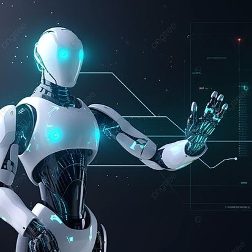

Robotics
Combines AI with physical machines to perform tasks in the real world.


Artificial Intelligence (AI) is the simulation of human intelligence in machines that are programmed to think, learn, and solve problems. AI systems can perform tasks such as speech recognition, decision-making, visual perception, and language translation. From virtual assistants to self-driving cars, AI is transforming industries and reshaping the way we live and work.
This website is dedicated to exploring the world of AI—its technologies, applications, and impact on society. Whether you're a beginner eager to learn or a professional seeking the latest trends, this platform offers educational resources, industry insights, and interactive tools to help you stay informed and engaged with the rapidly evolving field of Artificial Intelligence.
.jpg)


Artificial Intelligence (AI) refers to the development of computer systems capable of performing tasks that typically require human intelligence. These tasks include learning, reasoning, problem-solving, perception, and language understanding. AI systems use algorithms and large datasets to recognize patterns, make decisions, and adapt to new information.
Designed to perform specific tasks, such as voice recognition or recommendation systems. Examples include virtual assistants like Siri and Alexa.
A theoretical form of AI that can understand, learn, and perform any intellectual task that a human can do.
Allows machines to understand, interpret, and generate human language.
Combines AI with physical machines to perform tasks in the real world.
AI is transforming industries like healthcare, finance, transportation, and entertainment, driving innovation and improving efficiency across the globe.
Artificial Intelligence traces its roots to the philosophical and mathematical ideas of early civilizations:
AI shifted towards learning from data: